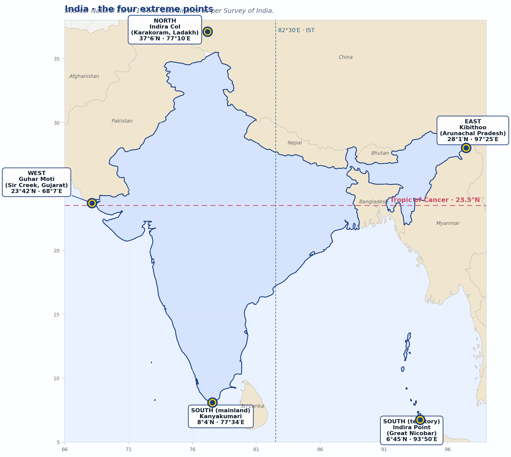
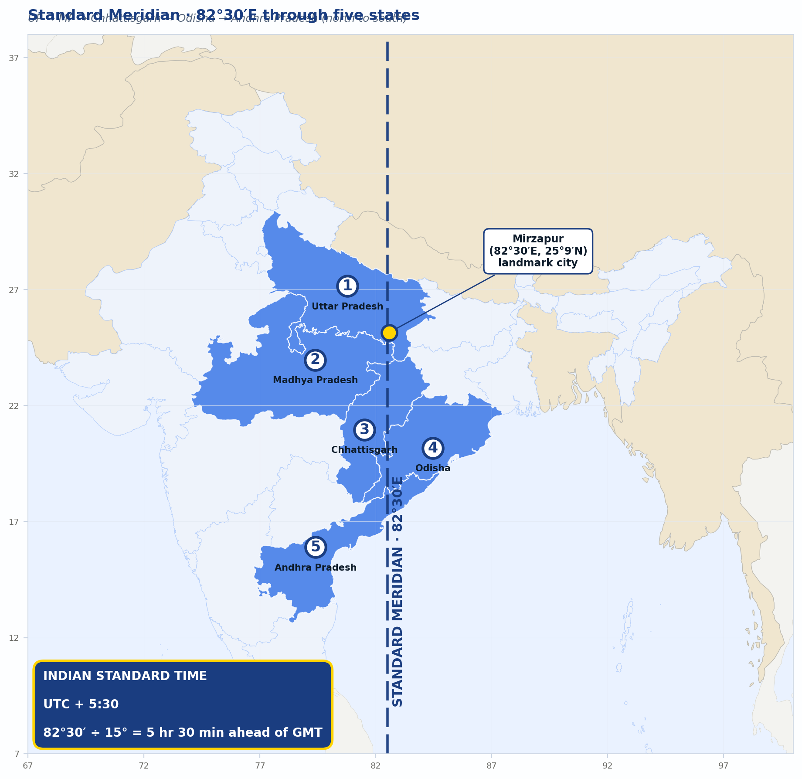
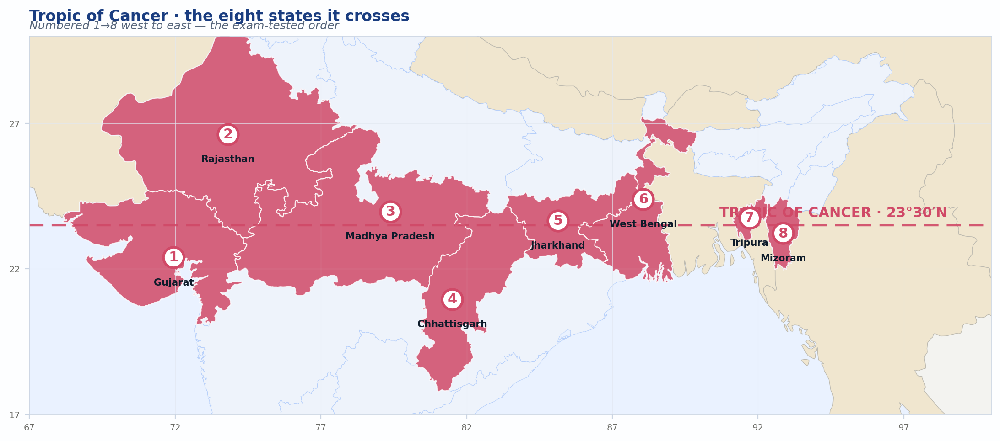
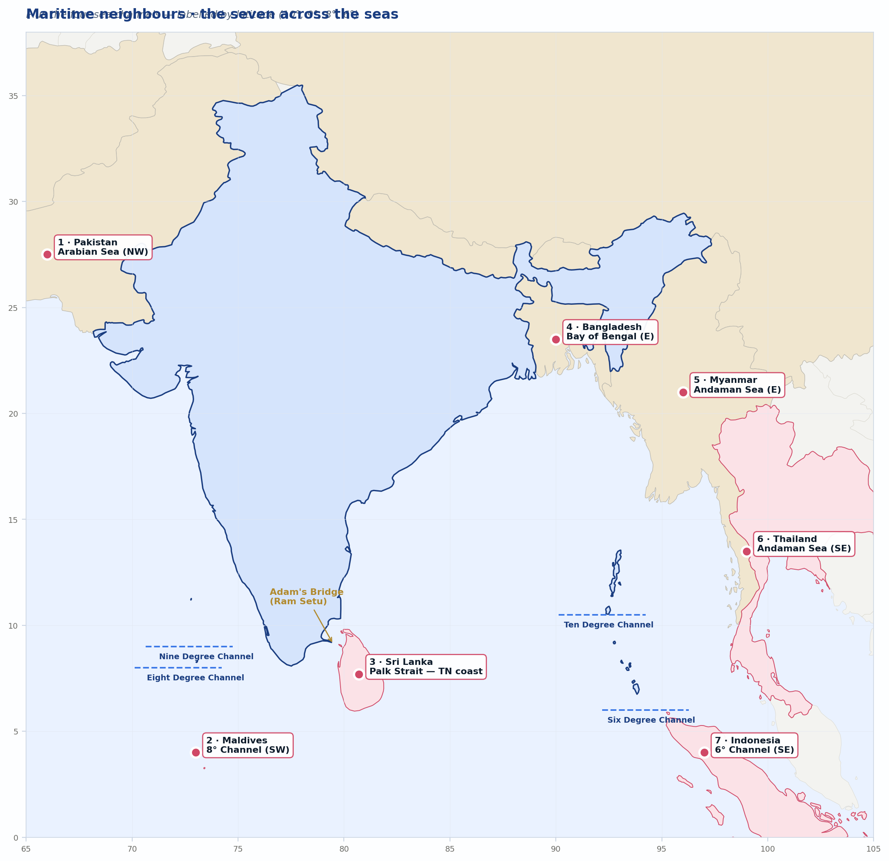
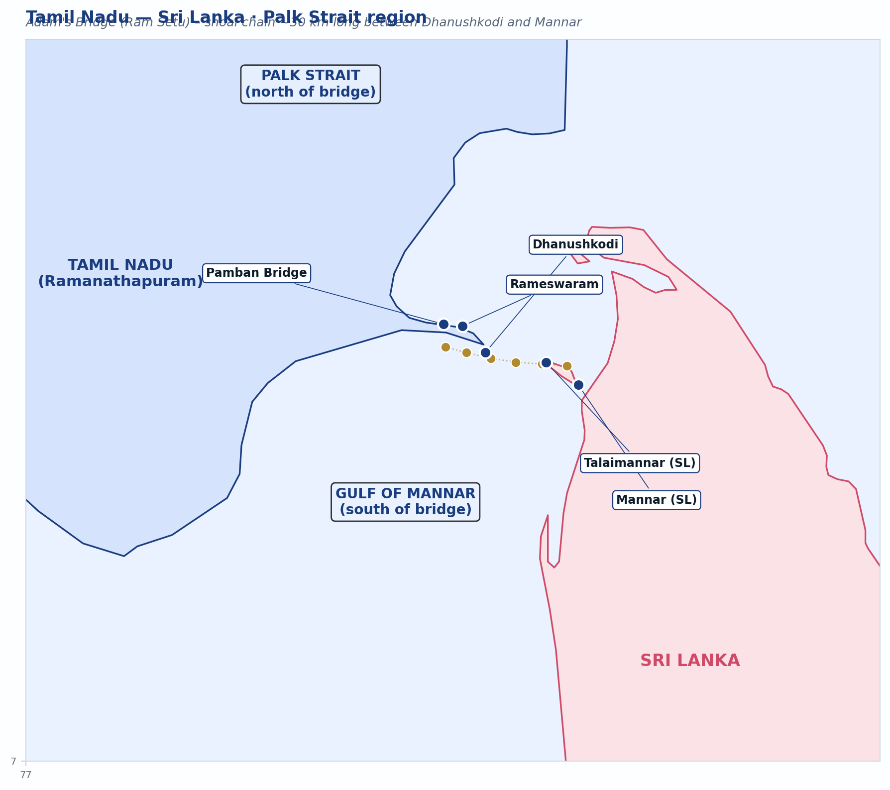

India in the World.
Where India sits on the globe, how big it is, who its neighbours are, and why all of this matters for trade, climate, and security — explored through maps, charts, and infographics.
OBJECTIVES OF THIS CHAPTER
- State India's exact latitudinal and longitudinal extent and identify the four extreme points.
- Recall India's total area, ranking, and key dimensions in kilometres.
- Explain the Standard Meridian, IST, and why a single time zone is used.
- Identify the eight states crossed by the Tropic of Cancer.
- List the seven land neighbours and the seven maritime neighbours of India.
- Appreciate India's strategic location in the Indian Ocean and Asia.
Chapter at a glance — the mind map.
Before you read, see the shape of the chapter. Everything below hangs off these six branches.
India lies entirely in the Northern Hemisphere and the Eastern Hemisphere. Before we walk the Himalayas, the rivers, the plains, and the coasts, we must first know where India is — in numbers, on a globe. Coordinates and distances feel dry at first reading, but they answer real questions: why is the southern tip warm year-round, why does the sun rise an hour earlier in Arunachal than in Gujarat, why does India trade so heavily by sea? Most importantly, the figures in this chapter are among the most predictable items on the TNPSC paper.
Absolute location.
India's four extreme points — the map.
The map below is plotted from Natural Earth 1:50m public-domain boundary data. All five extreme-point coordinates are as per Survey of India and official Government of India sources. Note that Indira Point in the Andaman & Nicobar Islands lies further south than Kanyakumari — Kanyakumari is the southernmost mainland point only.

India's southernmost point is Indira Point (6° 45′ N) in the Andaman & Nicobar Islands — not Kanyakumari. Kanyakumari is the southernmost point of the mainland. Indira Point was earlier called Pygmalion Point; the 2004 tsunami submerged part of it.
Size and area.
India covers a total area of 3,287,263 km², accounting for about 2.4% of the world's land surface. It is the seventh-largest country in the world by area and the most populous country in the world since April 2023.
World ranking — top 7 by area.
"R-C-U-C-B-A-I" — Russia, Canada, USA, China, Brazil, Australia, India. Memorise the order; the country that "drops out" of the top six is the one that the question writer will use as a distractor.
The Standard Meridian and IST.
India spans 29° of longitude — at 4 minutes per degree, the sun rises about 2 hours earlier in Arunachal Pradesh than in Gujarat. Running multiple time zones across one country creates administrative chaos. India therefore uses a single time zone based on the longitude 82° 30′ E — the Standard Meridian of India — which passes through Mirzapur in Uttar Pradesh.

The Standard Meridian (82° 30′ E) passes through five states: Uttar Pradesh, Madhya Pradesh, Chhattisgarh, Odisha, and Andhra Pradesh — from north to south. Mirzapur (UP) is the textbook landmark, but TNPSC has asked about the others too.
The Tropic of Cancer.
The Tropic of Cancer (23° 30′ N) divides India into two unequal halves — a tropical south and a sub-tropical north. The Tropic passes through eight Indian states, from west to east.

Land frontiers and neighbours.
India shares its land border with seven sovereign countries. Visualised by border length:
Radcliffe Line — India & Pakistan / Bangladesh (1947).
Durand Line — Afghanistan & Pakistan (1893; predates partition).
McMahon Line — India & China (Arunachal sector, 1914 Simla).
Line of Actual Control (LAC) — de facto India–China border.
Line of Control (LoC) — de facto India–Pakistan border in J&K.
Maritime neighbours.
India's seas — the Arabian Sea, the Bay of Bengal and the Indian Ocean — give it seven maritime neighbours. The map below positions them in real geography around India.

Tamil Nadu sits face-to-face with Sri Lanka across the Palk Strait. The narrowest point — Adam's Bridge (Ram Setu), a chain of limestone shoals from Dhanushkodi to Mannar — is only about 30 km wide. Pamban Island, Rameswaram, and the Gulf of Mannar Marine Biosphere Reserve all lie here.
Important sea channels around India.
Confusion-trap territory. The channels below are arranged by latitude — north to south — to make memorisation visual.
Tamil Nadu's seascape — Palk Strait region.

Why this location matters.
India's location has profound consequences. The infographic below summarises the four most exam-relevant strategic outcomes.
Exclusive Economic Zone (EEZ).
What this chapter said.
- India lies 8° 4′ N – 37° 6′ N and 68° 7′ E – 97° 25′ E; entirely in Northern and Eastern hemispheres.
- Area: 3,287,263 km², 2.4% of world land, 7th largest country.
- N–S extent: 3,214 km. E–W extent: 2,933 km.
- Land border: 15,200 km with 7 countries. Coastline: 7,516.6 km.
- Standard Meridian: 82° 30′ E through Mirzapur. IST = UTC+5:30.
- Tropic of Cancer crosses 8 states: Gujarat, Rajasthan, MP, Chhattisgarh, Jharkhand, WB, Tripura, Mizoram.
- Seven land neighbours: Bangladesh (longest), China, Pakistan, Nepal, Myanmar, Bhutan, Afghanistan (shortest).
- Seven maritime neighbours including Sri Lanka, which is closest to Tamil Nadu.
- EEZ: 200 nautical miles, ~2.37 million km².
Practice MCQs
- Tamil Nadu
- Kerala
- Andaman & Nicobar Islands
- Lakshadweep
Reveal answer
C — Andaman & Nicobar Islands. Indira Point (6° 45′ N) in Great Nicobar is the southernmost point of India. Kanyakumari is the southernmost point of the mainland only.
- Allahabad
- Mirzapur
- Lucknow
- Kanpur
Reveal answer
B — Mirzapur (Uttar Pradesh). The Standard Meridian (82° 30′ E) is the basis of Indian Standard Time.
- 6
- 7
- 8
- 9
Reveal answer
C — 8. Gujarat, Rajasthan, Madhya Pradesh, Chhattisgarh, Jharkhand, West Bengal, Tripura, and Mizoram.
- China
- Pakistan
- Bangladesh
- Nepal
Reveal answer
C — Bangladesh (4,096.7 km), followed by China (3,488 km).
- Maldives
- Sri Lanka
- Indonesia
- Bangladesh
Reveal answer
B — Sri Lanka. The Palk Strait sits between Tamil Nadu and Sri Lanka.
- Radcliffe Line
- Durand Line
- McMahon Line
- LoC
Reveal answer
C — McMahon Line. Agreed at the 1914 Simla Convention; not recognised by China.
- 1.6 %
- 2.4 %
- 3.2 %
- 4.0 %
Reveal answer
B — 2.4 %. India's 3.28 million km² out of about 148.9 million km² of global land.
- Andaman & Nicobar Islands
- Lakshadweep & Maldives
- India & Sri Lanka
- Great Nicobar & Sumatra
Reveal answer
B — Lakshadweep & Maldives. Specifically, Minicoy from the Maldives, along the 8° N parallel. The Ten Degree Channel separates Andaman from Nicobar; the Six Degree Channel separates Great Nicobar from Sumatra.
- 4 hours
- 5 hours
- 5 hours 30 minutes
- 6 hours
Reveal answer
C — 5 hours 30 minutes. The Standard Meridian at 82° 30′ E sits between the 5-hour and 6-hour zones, producing the half-hour offset.
- Andhra Pradesh
- Tamil Nadu
- Maharashtra
- Gujarat
Reveal answer
D — Gujarat (1,214 km). Andhra Pradesh and Tamil Nadu follow.
Maps: Coastlines, country boundaries, and Indian state boundaries are plotted from Natural Earth (1:50m and 1:10m, public domain — naturalearthdata.com) using GeoPandas + Matplotlib.
Coordinates: Extreme-point coordinates as published by the Survey of India. Tropic-of-Cancer state list cross-checked with NCERT Class XI (India — Physical Environment). Standard Meridian states verified by overlaying the 82.5°E meridian on Natural Earth state polygons.
Border lengths: Department of Border Management, Ministry of Home Affairs (Govt. of India).
Area & ranking: Surveyor General of India; UN Statistics Division.
Every figure in this chapter has been double-checked against at least two of the above sources before publication.